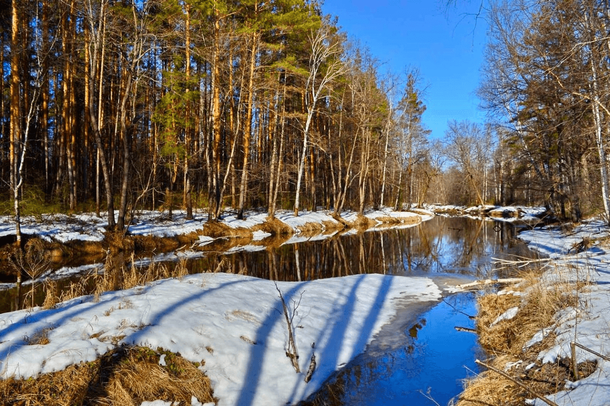
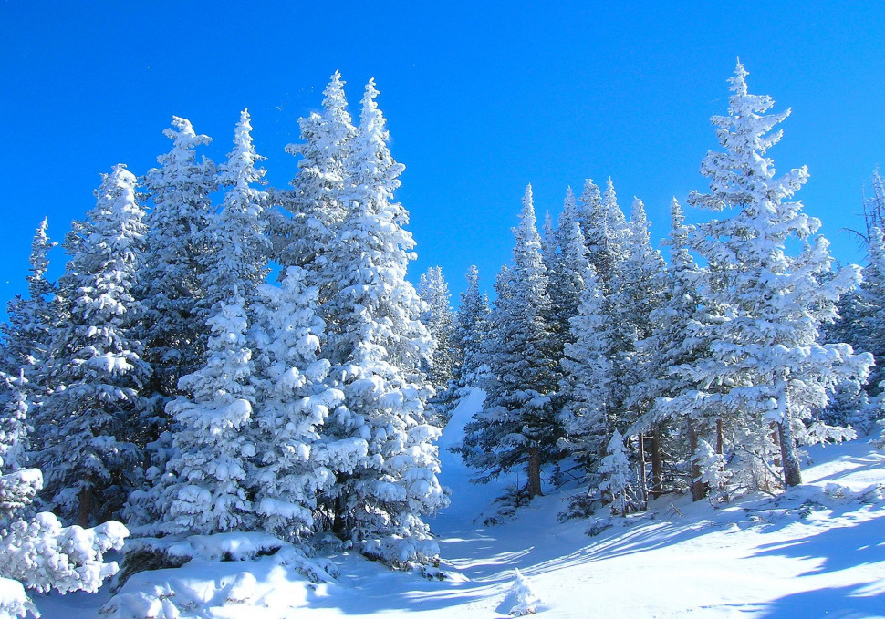
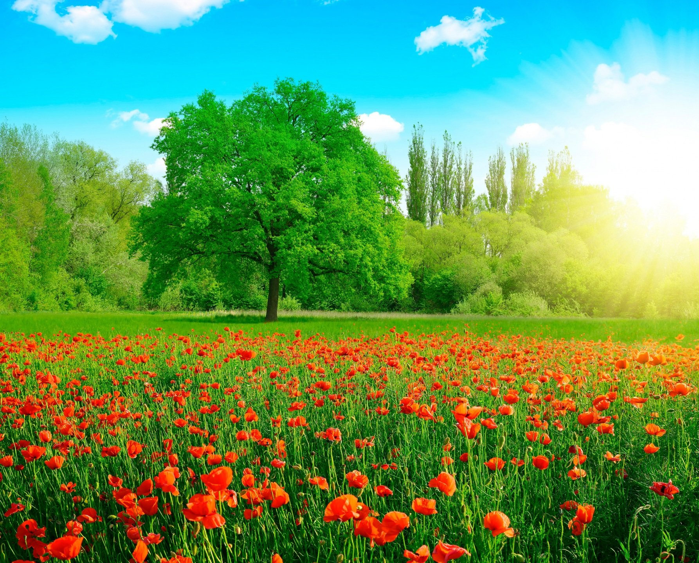
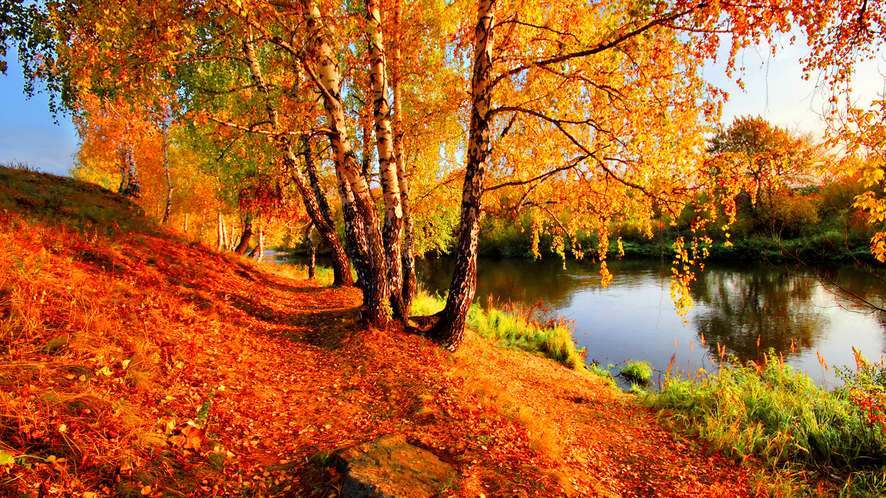

Весна

Наконец пришла долгожданная весна. Так приятно слышать щебетание птиц и журчание ручейков. Солнечные лучи стали намного теплее и ласковее. Больше не хочется сидеть дома, так и тянет в парк.
...
Это очень интересно гулять по парку весной и следить за тем, как пробуждается природа. С каждым днем солнечные лучи становятся все теплее, и снег не может больше им противостоять. Его становится все меньше и меньше. Царство Снежной королевы потихоньку исчезает.
Небо весной необычайно голубое. Дни становятся все длиннее, и от этого так радостно на душе. Пришла не только новая пора, но и новая жизнь.
Зима

Наступило чудесное время года - Зима. Она пришла к нам в белом наряде и укрыла поля белоснежными, пушистыми и мягкими коврами.
...
Зима раскрасила лес по своему. Где-то она оставила чуть-чуть свежих травинок.Где-то она добавила снежные сугробы.
А все таки, как интересно смотреть в окно когда белые, огромные хлопья ложатся на землю. Это прекрасно!
Я люблю зимушку-зиму в своем городе!
Лето

Очень богат русский язык словами, относящимися к временам года и к природным явлениям, с ними
связанным.
Осень

Очень богат русский язык словами, относящимися к временам года и к природным явлениям, с ними
связанным.